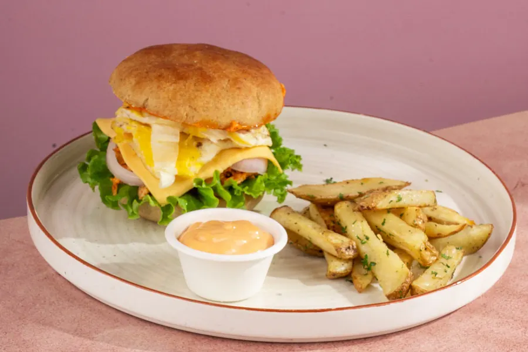
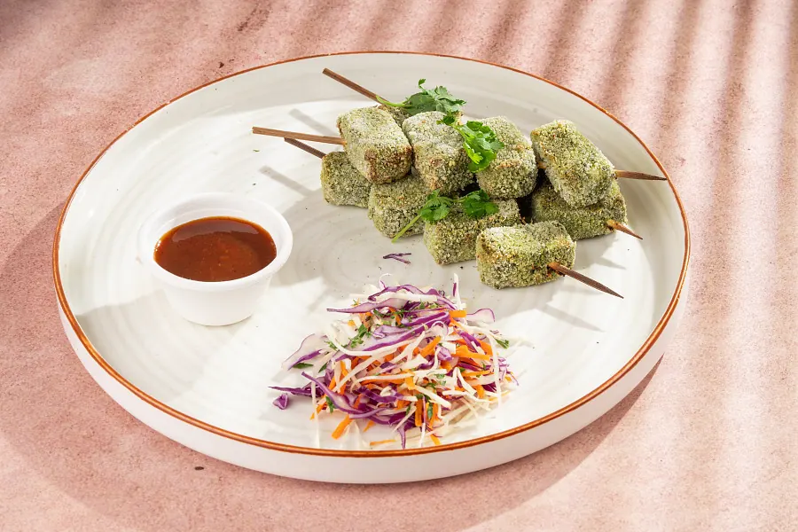
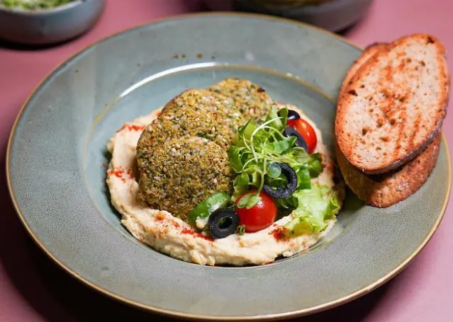
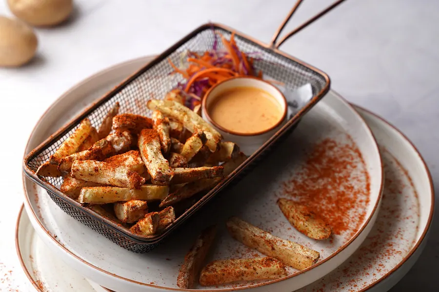
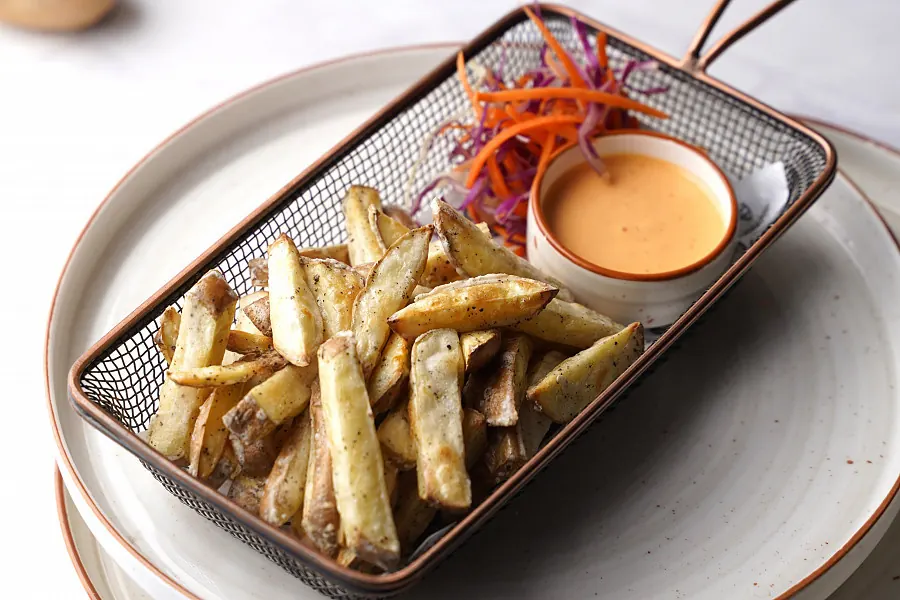
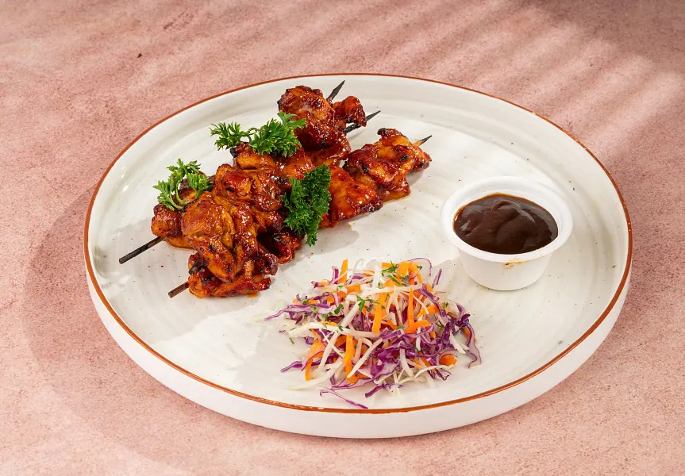
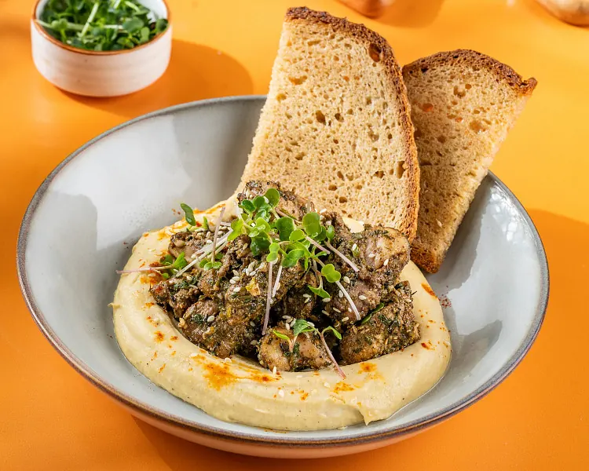
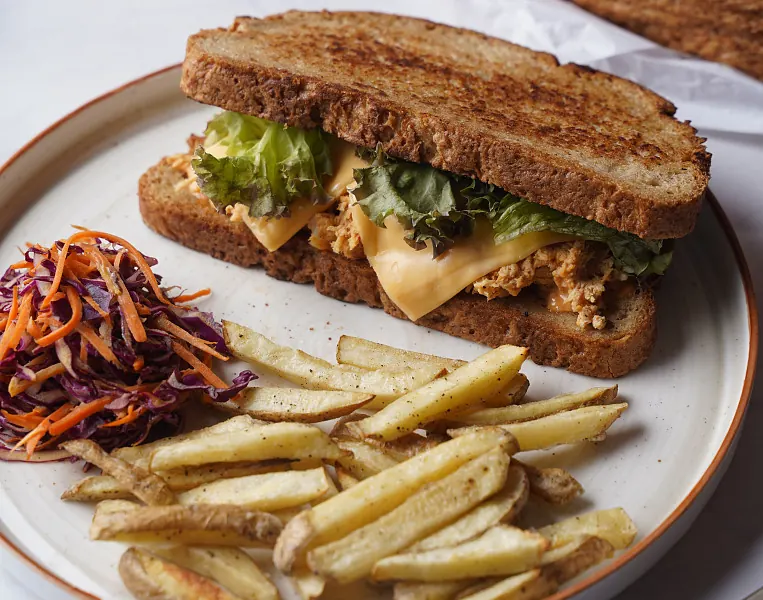

Snacking
Millet Puffs Indian Masala Pack 4
Indulge in the perfect crispy snack with our Millet Puffs, made with more than 50% Millets
View details ↗For snack breaks and easy catch-ups, browse burgers, sandwiches, garlic bread and other café favourites. Pick something savoury and stay a while.
Indulge in the perfect crispy snack with our Millet Puffs, made with more than 50% Millets
View details ↗
Indulge in the perfect crispy snack with our Millet Puffs, made with more than 50% Millets
View details ↗
Soft, buttery, and packed with flavor
View details ↗
Crispy potato patty topped with a sweet and spicy maple sriracha sauce, served in a soft…
View details ↗
Slow-cooked, shredded chicken layered with a perfectly cooked egg, served in a soft burger…
View details ↗
Soft paneer cubes tossed in a bold, spicy thecha masala made with crushed green chillies,…
View details ↗Cheesy garlic bread made with french baguette slice topped with alfredo sauce, cheese and…
View details ↗
Classic Mediterranean flavors with a clean twist crispy falafel served alongside creamy…
View details ↗
Feeling fiery These fries are tossed in our signature peri peri sauce for a flavor…
View details ↗
Crispy and classic! These golden fries are simply seasoned with a touch of salt for…
View details ↗
Juicy chicken pieces marinated in smoky barbecue sauce, grilled to perfection on skewers…
View details ↗
Toasted garlic bread topped with tender, seasoned chicken and loaded with melted cheese,…
View details ↗
Tender chicken marinated in aromatic zaatar spices and oven-baked for a perfectly juicy bite
View details ↗A taste of Italy on sourdough! Fresh mozzarella cheese, juicy tomatoes, and fragrant pesto…
View details ↗
This sandwich features succulent grilled chicken marinated in our fiery peri peri sauce,…
View details ↗